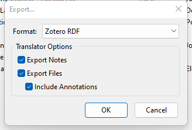

2 文献整理
Zotero是核心文献管理工具，它不只能对文献进行归类和标签链接，同时提供了强大的文件笔记功能。 因此我们推荐将每篇文献的单独记录也在其中完成。 对于Zotero的有效设置可以参见 Chapter 1 中的内容，本章主要对于单篇文献笔记方法进行介绍。
2.1 笔记导入
对于笔记导入的方法，我们建议采用Zotero + 浏览器插件形式进行，避免手动输入。 安装Zotero后，会自动提示安装浏览器插件。 安装好后，第一次使用需要在插件中登录你的Zotero账号。 之后，只要插件会对各种浏览网页内容进行分类，如果是文章或者书籍信息则会自动转换图标，提示可以导入。 你只需要点击一下，就能自动导入Zotero。 如果你使用的是校园网或者校园VPN且你的图书馆购买了此资料，那么资料附件则会自动导入并存储到你之前设置的文件夹。1
注意：Zotero插件需要在Zotero本地软件打开情况下才能较好运行。
通过Zotero导入笔记有几点注意事项：
- 及时修补。 Zotero随让能够帮你完成90%的文献信息输入工作，但有时也会出现信息错漏的地方，比如原文作者可能都是用英文大写或者中文名称依旧采用姓名分开方式。 有时也会丢失一些信息。 这就要求使用者及时对输入信息进行检查，及时进行添改，保证信息正确。
- 知网。 知网对于外部信息通常不友好。 但这一问题很大程度上可以通过
jasminum插件解决，请无比安装且做好设置。2 安装成功后，jasminum选项也会出现在右键菜单中，请妥善使用。 - 提前分类。 Zotero支持文献分种类、分内容保存，同时又支持全局搜索，因此请在收集文献前事先建立分类。 建立方式和在电脑中建立文件夹类似，在此不做赘述。
2.2 单篇笔记
高效读书笔记须兼备两个原则：好记和好搜。 所谓“好记”是指能够快速的将文章内容和重点理清，当回看笔记的时候也能快速定位到需要的部分。 所谓“好搜”是指在记录笔记时即考虑到日后搜索的需要，重视关键字和短语的记录。
基于以上原则，我推崇使用结构化笔记方式来记录单篇文献，即对文章各部分内容进行拆解，填充到固定的笔记分节中去。 这里介绍的方式，是我和我组成员长期实践的结果。其中分节设置部分借鉴了Social Science Quarterly的摘要写作方式，总体包含五部分：
- Objective：文章主要研究对象，一般能在题目和摘要中找到。
- 推荐将文中一些重要概念也记录到这部分。
- Theory: 文章的主要观点、理论逻辑等。
- Method：采用的研究方法。
- 如果是理论性文章Method部分可省略。
- 如果是实证性文章，请记录以下内容:
- Data：数据来源、体量、搜集过程等信息
- Method：数据分析方法、重要方法决定、稳健性检验等
- Findings：文章的主要发现，本部分业主要针对实证文章
- Highlights：文章的亮点
- Lits: 文中提及的可能以后会用到的一些文献综述
- Theory：文章一些理论观点或者未来理论可以生发之处
- Method： 文中提到的一些方法方面的综述或者讨论
- Empirics：文中提及的其他文章中的实证发现
- Wording：高效、地道的中英文词汇
在记录这些内容的过程中，请尽量使用短语、bullet points, 箭头等形式，避免大段摘抄。 另外Zotero有强大的文本标注和转化功能。 你可以在阅读过程中即对文本进行分类标注，然后转化成上述笔记形式。
2.3 笔记共享
Zotero能很好支持线上和线下文献共享。 我们推荐采用线下共享方式，以保证本地端包含文献的记录、笔记、文档等所有内容。 导出方式非常简单，只需选中需要文本，右键选择导出。
之后在导出项中选择Zotero RDF格式，然后勾选导出笔记、文件和标注。 生成文件将是一个包含了文献文本和.rdf的文件夹，压缩后分享给同伴即可。 我们推荐对多个文献采用多选分享方式，而不是一篇文章一个rdf。

设置参见 Section 1.2.6 。↩︎
参见 Section 1.3 。↩︎